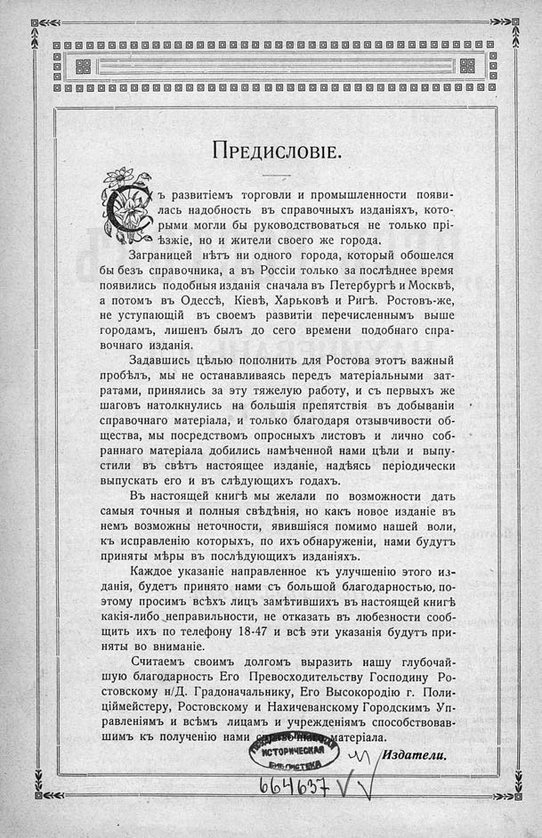

Лист источника 32
Скан

Распознанный текст
ПРЕДИСЛОВІЕ.
Съ развитіемъ торговли и промышленности появи-
лась надобность въ справочныхъ изданіяхъ, кото-
рыми могли бы руководствоваться не только прі-
ѣзжіе, но и жители своего же города.
Заграницей нѣтъ ни одного города, который обошелся
бы безъ справочника, а въ Россіи только за послѣднее время
появились подобныя изданія сначала въ Петербургѣ и Москвѣ,
а потомъ въ Одессѣ, Кіевѣ, Харьковѣ и Ригѣ. Ростовъ-же,
не уступающій въ своемъ развитіи перечисленнымъ выше
городамъ, лишенъ былъ до сего времени подобнаго спра-
вочнаго изданія.
Задавшись цѣлью пополнить для Ростова этотъ важный
пробѣлъ, мы не останавливаясь передъ матеріальными зат-
ратами, принялись за эту тяжелую работу, и съ первыхъ же
шаговъ натолкнулись на большія препятствія въ добываніи
справочнаго матеріала, и только благодаря отзывчивости об-
щества, мы посредствомъ опросныхъ листовъ и лично соб-
раннаго матеріала добились намѣченной нами цѣли и выпу-
стили въ свѣтъ настоящее изданіе, надѣясь періодически
выпускать его и въ слѣдующихъ годахъ.
Въ настоящей книгѣ мы желали по возможности дать
самыя точныя и полныя свѣдѣнія, но какъ новое изданіе въ
немъ возможны неточности, явившіяся помимо нашей воли,
къ исправленію которыхъ, по ихъ обнаруженіи, нами будутъ
приняты мѣры въ послѣдующихъ изданіяхъ.
Каждое указаніе направленное къ улучшенію этого из-
данія, будетъ принято нами съ большой благодарностью, по-
этому просимъ всѣхъ лицъ замѣтившихъ въ настоящей книгѣ
какія-либо неправильности, не отказать въ любезности сооб-
щить ихъ по телефону 18-47 и всѣ эти указанія будутъ при-
няты во вниманіе.
Считаемъ своимъ долгомъ выразить нашу глубочай-
шую благодарность Его Превосходительству Господину Ро-
стовскому н/Д. Градоначальнику, Его Высокородію г. Поли-
ціймейстеру, Ростовскому и Нахичеванскому Городскимъ Уп-
равленіямъ и всѣмъ лицамъ и учрежденіямъ способствовав-
шимъ къ полученію нами справочнаго матеріала.
Издатели.